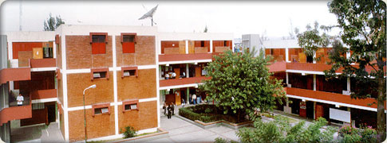

Ingeniería Eléctrica
El Ingeniero Eléctrico forma profesionales con sólidos conocimientos en ciencias formales e ingeniería y con una formación especializada en el campo de la energía eléctrica.

Objetivos
El Ingeniero Eléctrico forma profesionales con sólidos conocimientos en ciencias formales e ingeniería y con una formación especializada en el campo de la energía eléctrica.
Duración, grados y títulos
- Tiene una duración de 5 años.
- Grado Académico de Bachiller en Ingeniería Eléctrica.
- Título Profesional de Ingenierío eléctrico.
Campo ocupacional
- En empresas privadas y públicas dedicadas a la generación planeamiento, transporte, distribución y uso de la energía eléctrica.
- Empresas consultoras y contratistas dedicadas al diseño, montaje, supervisión, mantenimiento, reparación de los sistemas eléctricos.
- Organismos gubernamentales reguladores de la energía.
- Ejercicio liberal de la profesión.
- Docencia universitaria y Técnica e Investigación.
Contacto
Dirección:
- Av. Independencia s/n - Pab. Pedro Paulet 3ro.Piso
- Teléfono : (054) 211032
- E-mail: epiel@unsa.edu.pe